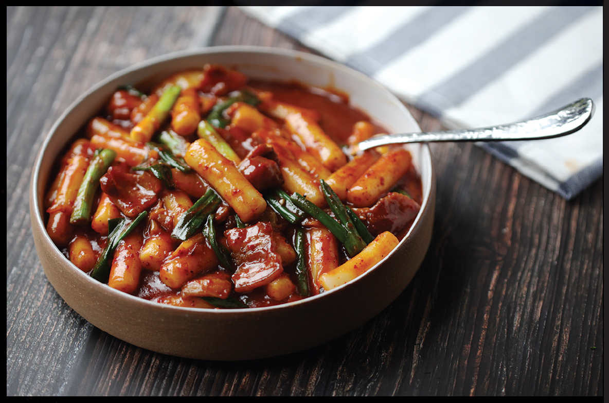

SPICY KOREAN RICE CAKE STEW (GUNGMUL TTEOKBOKKI) WITH KIMCHI
|
Yield Serves 4 |
Active Time 15 minutes Total Time 30 minutes |
Hondashi is powdered dashi that can be found at any Japanese market and most well-stocked supermarkets. While stick-shaped rice cakes are more traditional for this dish, either stick or disk-shaped rice cakes will work. If frozen, defrost the rice cakes in a bowl of cold water and drain just before adding to the broth in step 1. This dish also makes a good party snack when served in a preheated heavy bowl (to retain heat) or a slow cooker next to a cup full of toothpicks.
INGREDIENTS
1 tablespoon (15 ml) peanut, rice bran, or other neutral oil
4 ounces (120 g) fresh pork belly or bacon, sliced ⅛ inch thick and cut into squares (optional)
4 ounces (120 g) kimchi, cut into 1-inch pieces, plus a couple tablespoons (30 ml) kimchi juice from the jar
2 teaspoons (5 g) minced garlic (about 2 medium cloves)
2 cups (475 ml) homemade dashi (here) or the equivalent in Hondashi (see Notes)
1 pound (450 g) Korean or Chinese rice cakes (see Notes)
3 tablespoons (45 ml) gochujang
1 tablespoon (5 g) gochugaru (Korean chile flakes)
1 tablespoon (12 g) sugar, plus more to taste
2 teaspoons (10 ml) light soy sauce, plus more to taste
4 to 5 scallions, cut into 2-inch pieces
Freshly ground black pepper
This is the brothier version of Gireum Tteokbokki (here) and one of the simplest, most comforting Korean staples. You don’t need to add kimchi or pork belly to it, but I like the extra flavor and texture they bring. Rendering out some lard from the pork belly before adding the remaining ingredients to the wok gives the sauce a rich, porky flavor that goes well with the heat and sweetness of gochujang, as well as giving the sauce a gorgeous sheen. To take it over the top, this dish is wonderful with a poached, fried, or soft-boiled egg on top of each portion.
DIRECTIONS
1 Heat the oil in a wok over medium-high heat until shimmering. Add the pork belly, if using, and cook, stirring, until well rendered and crisped, about 4 minutes. Add the kimchi and kimchi juice and cook until the liquid is dried up and the kimchi is lightly browned around the edges, about 3 minutes. Add the garlic and stir-fry until fragrant, about 30 seconds. Add the dashi, rice cakes, gochujang, gochugaru, sugar, and soy sauce. Adjust the heat to keep it at a brisk simmer until the rice cakes are fully tender, about 10 minutes.
2 Add the scallions and continue cooking until the stew is reduced to a rich, saucy texture, 2 to 5 minutes longer. Season with black pepper and more sugar or soy sauce to taste. Transfer to a serving bowl and serve immediately.
